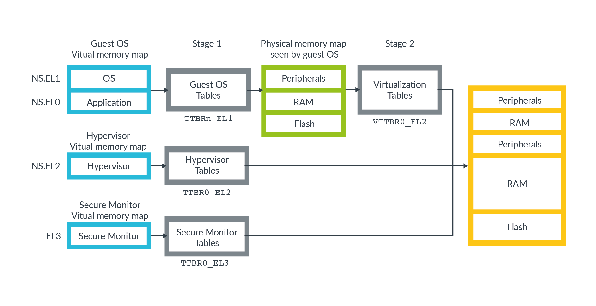
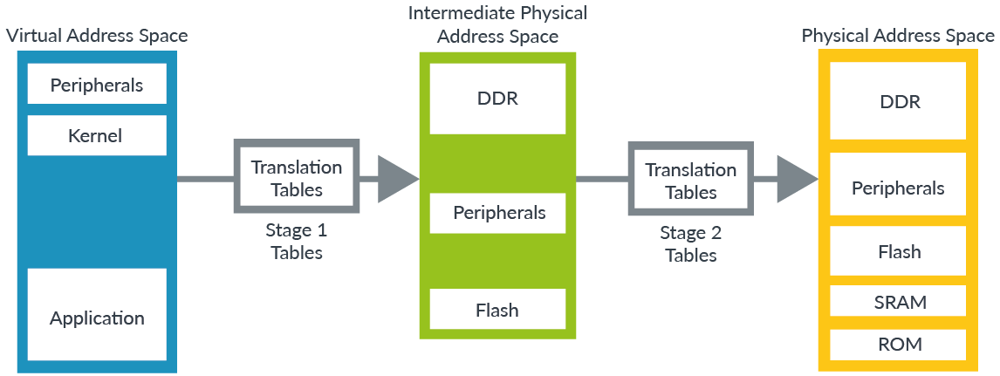

ARM CPU Refer Docs
CPU方面的一些文档参考
参考文档
ARM处理相关参考
如果需要研究ARM处理内部处理流程文档，可以参考下面网址，去找对应的CPU的信息
https://developer.arm.com/
https://developer.arm.com/architectures/learn-the-architecture/a-profile
learn-the-architecture分类是用于学习ARM体系架构的文档
SMMU Hypervisor
System MMU
https://developer.arm.com/architectures/learn-the-architecture/memory-management
https://developer.arm.com/architectures/learn-the-architecture/memory-management/address-spaces-in-armv8-a

如上图显示有三种虚拟地址转换空间
NS.EL0 and NS.EL1 (Non-secure EL0/EL1).
含有两组地址转换表，从而允许hypervisor管理虚拟机可见的物理地址
NS.EL2 (Non-secure EL2).
EL3.

The Stage 1 tables translate virtual addresses to intermediate physical addresses (IPAs). In Stage 1 the OS thinks that the IPAs are physical address spaces.
The hypervisor controls a second set of translations, which we call Stage 2. This second set of translations translates IPAs to physical addresses.
https://developer.arm.com/docs/ihi0048/latest